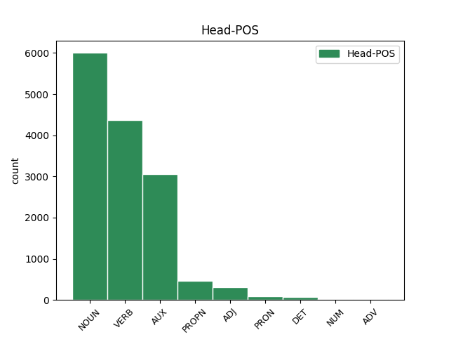

Distribution of features within this leaf

Agreement Rules sorted by frequency.
- When the dependent token is the modifer(mod) of the head token, and the dependent token is ADJ.
1 Keď _ _ _ _ 0 _ _ _
2 zistil _ _ _ _ 0 _ _ _
3 , _ _ _ _ 0 _ _ _
4 že _ _ _ _ 0 _ _ _
5 je _ _ _ _ 0 _ _ _
6 obkľúčený _ _ _ _ 0 _ _ _
7 a _ _ _ _ 0 _ _ _
8 má _ _ _ _ 0 _ _ _
9 sa _ _ _ _ 0 _ _ _
10 vzdať _ _ _ _ 0 _ _ _
11 , _ _ _ _ 0 _ _ _
12 zabil _ _ _ _ 0 _ _ _
13 sa _ _ _ _ 0 _ _ _
14 ručným ručný ADJ AAis7x Animacy=Inan|Case=Ins|Degree=Pos|Gender=Masc|Number=Sing 15 mod _ _
15 granátom granát NOUN SSis7 Animacy=Inan|Case=Ins|Gender=Masc|Number=Sing 0 _ _ _
16 . _ _ _ _ 0 _ _ _
1 Rád _ _ _ _ 0 _ _ _
2 by _ _ _ _ 0 _ _ _
3 som byť AUX VKesa+ Aspect=Imp|Mood=Ind|Number=Sing|Person=1|Polarity=Pos|Tense=Pres|VerbForm=Fin 0 _ _ _
4 veril veriť VERB VLescm+ Animacy=Anim|Aspect=Imp|Gender=Masc|Number=Sing|Polarity=Pos|Tense=Past|VerbForm=Part 3 comp:aux _ _
5 čestnosti _ _ _ _ 0 _ _ _
6 politikov _ _ _ _ 0 _ _ _
7 , _ _ _ _ 0 _ _ _
8 ale _ _ _ _ 0 _ _ _
9 realita _ _ _ _ 0 _ _ _
10 na _ _ _ _ 0 _ _ _
11 Slovensku _ _ _ _ 0 _ _ _
12 je _ _ _ _ 0 _ _ _
13 zatiaľ _ _ _ _ 0 _ _ _
14 iná _ _ _ _ 0 _ _ _
15 . _ _ _ _ 0 _ _ _
1 Polícia _ _ _ _ 0 _ _ _
2 včera _ _ _ _ 0 _ _ _
3 oznámila _ _ _ _ 0 _ _ _
4 , _ _ _ _ 0 _ _ _
5 že _ _ _ _ 0 _ _ _
6 Korac korac PROPN SSms1:r Animacy=Anim|Case=Nom|Gender=Masc|Number=Sing 11 subj _ _
7 pri _ _ _ _ 0 _ _ _
8 pokuse _ _ _ _ 0 _ _ _
9 o _ _ _ _ 0 _ _ _
10 zadržanie _ _ _ _ 0 _ _ _
11 spáchal spáchať VERB VLdscm+ Animacy=Anim|Aspect=Perf|Gender=Masc|Number=Sing|Polarity=Pos|Tense=Past|VerbForm=Part 0 _ _ _
12 samovraždu _ _ _ _ 0 _ _ _
13 . _ _ _ _ 0 _ _ _
1 Keď _ _ _ _ 0 _ _ _
2 zistil _ _ _ _ 0 _ _ _
3 , _ _ _ _ 0 _ _ _
4 že _ _ _ _ 0 _ _ _
5 je byť AUX VKesc+ Aspect=Imp|Mood=Ind|Number=Sing|Person=3|Polarity=Pos|Tense=Pres|VerbForm=Fin 0 _ _ _
6 obkľúčený _ _ _ _ 0 _ _ _
7 a _ _ _ _ 0 _ _ _
8 má mať VERB VKesc+ Aspect=Imp|Mood=Ind|Number=Sing|Person=3|Polarity=Pos|Tense=Pres|VerbForm=Fin 5 conj _ _
9 sa _ _ _ _ 0 _ _ _
10 vzdať _ _ _ _ 0 _ _ _
11 , _ _ _ _ 0 _ _ _
12 zabil _ _ _ _ 0 _ _ _
13 sa _ _ _ _ 0 _ _ _
14 ručným _ _ _ _ 0 _ _ _
15 granátom _ _ _ _ 0 _ _ _
16 . _ _ _ _ 0 _ _ _
1 Šetrí _ _ _ _ 0 _ _ _
2 aj _ _ _ _ 0 _ _ _
3 pani _ _ _ _ 0 _ _ _
4 ministerka _ _ _ _ 0 _ _ _
5 financií _ _ _ _ 0 _ _ _
6 , _ _ _ _ 0 _ _ _
7 ktorá ktorý DET PAfs1 Case=Nom|Gender=Fem|Number=Sing|PronType=Int,Rel 9 subj _ _
8 stále _ _ _ _ 0 _ _ _
9 nevylučuje vylučovať VERB VKesc- Aspect=Imp|Mood=Ind|Number=Sing|Person=3|Polarity=Neg|Tense=Pres|VerbForm=Fin 0 _ _ _
10 ďalšie _ _ _ _ 0 _ _ _
11 zvyšovania _ _ _ _ 0 _ _ _
12 cien _ _ _ _ 0 _ _ _
13 a _ _ _ _ 0 _ _ _
14 zodpovednosť _ _ _ _ 0 _ _ _
15 za _ _ _ _ 0 _ _ _
16 to _ _ _ _ 0 _ _ _
17 prenechala _ _ _ _ 0 _ _ _
18 na _ _ _ _ 0 _ _ _
19 vedúcich _ _ _ _ 0 _ _ _
20 úsekov _ _ _ _ 0 _ _ _
21 ? _ _ _ _ 0 _ _ _
1 Keď _ _ _ _ 0 _ _ _
2 zistil _ _ _ _ 0 _ _ _
3 , _ _ _ _ 0 _ _ _
4 že _ _ _ _ 0 _ _ _
5 je byť AUX VKesc+ Aspect=Imp|Mood=Ind|Number=Sing|Person=3|Polarity=Pos|Tense=Pres|VerbForm=Fin 0 _ _ _
6 obkľúčený obkľúčený ADJ Gtms1x Animacy=Anim|Case=Nom|Degree=Pos|Gender=Masc|Number=Sing|Polarity=Pos|VerbForm=Part|Voice=Pass 5 comp:pred _ _
7 a _ _ _ _ 0 _ _ _
8 má _ _ _ _ 0 _ _ _
9 sa _ _ _ _ 0 _ _ _
10 vzdať _ _ _ _ 0 _ _ _
11 , _ _ _ _ 0 _ _ _
12 zabil _ _ _ _ 0 _ _ _
13 sa _ _ _ _ 0 _ _ _
14 ručným _ _ _ _ 0 _ _ _
15 granátom _ _ _ _ 0 _ _ _
16 . _ _ _ _ 0 _ _ _
1 Kto kto PRON PFms1 Animacy=Anim|Case=Nom|Gender=Masc|Number=Sing|PronType=Int,Rel 3 subj _ _
2 sochy _ _ _ _ 0 _ _ _
3 vytvorí vytvoriť VERB VKdsc+ Aspect=Perf|Mood=Ind|Number=Sing|Person=3|Polarity=Pos|Tense=Pres|VerbForm=Fin 0 _ _ _
4 a _ _ _ _ 0 _ _ _
5 ako _ _ _ _ 0 _ _ _
6 budú _ _ _ _ 0 _ _ _
7 vyzerať _ _ _ _ 0 _ _ _
8 , _ _ _ _ 0 _ _ _
9 ešte _ _ _ _ 0 _ _ _
10 nie _ _ _ _ 0 _ _ _
11 je _ _ _ _ 0 _ _ _
12 isté _ _ _ _ 0 _ _ _
13 . _ _ _ _ 0 _ _ _
1 FRANTIŠEK františek PROPN SSms1:r Animacy=Anim|Case=Nom|Gender=Masc|Number=Sing 2 mod _ _
2 PODHRADSKÝ podhradský PROPN SAms1:r Animacy=Anim|Case=Nom|Gender=Masc|Number=Sing 0 _ _ _
3 , _ _ _ _ 0 _ _ _
4 Ilava _ _ _ _ 0 _ _ _
1 Šetrí _ _ _ _ 0 _ _ _
2 aj _ _ _ _ 0 _ _ _
3 pani _ _ _ _ 0 _ _ _
4 ministerka ministerka NOUN SSfs1 Case=Nom|Gender=Fem|Number=Sing 0 _ _ _
5 financií _ _ _ _ 0 _ _ _
6 , _ _ _ _ 0 _ _ _
7 ktorá _ _ _ _ 0 _ _ _
8 stále _ _ _ _ 0 _ _ _
9 nevylučuje vylučovať VERB VKesc- Aspect=Imp|Mood=Ind|Number=Sing|Person=3|Polarity=Neg|Tense=Pres|VerbForm=Fin 4 mod _ _
10 ďalšie _ _ _ _ 0 _ _ _
11 zvyšovania _ _ _ _ 0 _ _ _
12 cien _ _ _ _ 0 _ _ _
13 a _ _ _ _ 0 _ _ _
14 zodpovednosť _ _ _ _ 0 _ _ _
15 za _ _ _ _ 0 _ _ _
16 to _ _ _ _ 0 _ _ _
17 prenechala _ _ _ _ 0 _ _ _
18 na _ _ _ _ 0 _ _ _
19 vedúcich _ _ _ _ 0 _ _ _
20 úsekov _ _ _ _ 0 _ _ _
21 ? _ _ _ _ 0 _ _ _
1 Chcela _ _ _ _ 0 _ _ _
2 ho _ _ _ _ 0 _ _ _
3 odohnať _ _ _ _ 0 _ _ _
4 , _ _ _ _ 0 _ _ _
5 ale _ _ _ _ 0 _ _ _
6 Tarzan _ _ _ _ 0 _ _ _
7 jej ona PRON PFfs3 Case=Dat|Gender=Fem|Number=Sing|Person=3|PronType=Prs 8 comp:obl _ _
8 chytil chytiť VERB VLdscm+ Animacy=Anim|Aspect=Perf|Gender=Masc|Number=Sing|Polarity=Pos|Tense=Past|VerbForm=Part 0 _ _ _
9 ruku _ _ _ _ 0 _ _ _
10 . _ _ _ _ 0 _ _ _
1 Otrasený otrasený ADJ AAms1x Animacy=Anim|Case=Nom|Degree=Pos|Gender=Masc|Number=Sing 0 _ _ _
2 , _ _ _ _ 0 _ _ _
3 ale _ _ _ _ 0 _ _ _
4 zdravý zdravý ADJ AAms1x Animacy=Anim|Case=Nom|Degree=Pos|Gender=Masc|Number=Sing 1 conj _ _
5 sa _ _ _ _ 0 _ _ _
6 z _ _ _ _ 0 _ _ _
7 nej _ _ _ _ 0 _ _ _
8 vymotal _ _ _ _ 0 _ _ _
9 . _ _ _ _ 0 _ _ _
1 Rád _ _ _ _ 0 _ _ _
2 by _ _ _ _ 0 _ _ _
3 som byť AUX VKesa+ Aspect=Imp|Mood=Ind|Number=Sing|Person=1|Polarity=Pos|Tense=Pres|VerbForm=Fin 0 _ _ _
4 veril _ _ _ _ 0 _ _ _
5 čestnosti _ _ _ _ 0 _ _ _
6 politikov _ _ _ _ 0 _ _ _
7 , _ _ _ _ 0 _ _ _
8 ale _ _ _ _ 0 _ _ _
9 realita _ _ _ _ 0 _ _ _
10 na _ _ _ _ 0 _ _ _
11 Slovensku _ _ _ _ 0 _ _ _
12 je byť AUX VKesc+ Aspect=Imp|Mood=Ind|Number=Sing|Person=3|Polarity=Pos|Tense=Pres|VerbForm=Fin 3 conj _ _
13 zatiaľ _ _ _ _ 0 _ _ _
14 iná _ _ _ _ 0 _ _ _
15 . _ _ _ _ 0 _ _ _
1 Ľudstvo _ _ _ _ 0 _ _ _
2 svojou _ _ _ _ 0 _ _ _
3 usilovnosťou _ _ _ _ 0 _ _ _
4 prispelo _ _ _ _ 0 _ _ _
5 k _ _ _ _ 0 _ _ _
6 zrodu _ _ _ _ 0 _ _ _
7 dvoch dva NUM NNfp2 Case=Gen|Gender=Fem|Number=Plur 9 mod _ _
8 svetových _ _ _ _ 0 _ _ _
9 vojen vojna NOUN SSfp2 Case=Gen|Gender=Fem|Number=Plur 0 _ _ _
10 , _ _ _ _ 0 _ _ _
11 ba _ _ _ _ 0 _ _ _
12 v _ _ _ _ 0 _ _ _
13 niektorých _ _ _ _ 0 _ _ _
14 kútoch _ _ _ _ 0 _ _ _
15 Zeme _ _ _ _ 0 _ _ _
16 vojny _ _ _ _ 0 _ _ _
17 pokračujú _ _ _ _ 0 _ _ _
18 . _ _ _ _ 0 _ _ _
1 FRANTIŠEK _ _ _ _ 0 _ _ _
2 PODHRADSKÝ podhradský PROPN SAms1:r Animacy=Anim|Case=Nom|Gender=Masc|Number=Sing 0 _ _ _
3 , _ _ _ _ 0 _ _ _
4 Ilava ilava PROPN SSfs1:r Case=Nom|Gender=Fem|Number=Sing 2 conj _ _
1 Vytvoríme _ _ _ _ 0 _ _ _
2 kapitálotvornú _ _ _ _ 0 _ _ _
3 vrstvu vrstva NOUN SSfs4 Case=Acc|Gender=Fem|Number=Sing 0 _ _ _
4 , _ _ _ _ 0 _ _ _
5 ktorá _ _ _ _ 0 _ _ _
6 bude byť AUX VBesc+ Aspect=Imp|Mood=Ind|Number=Sing|Person=3|Polarity=Pos|Tense=Fut|VerbForm=Fin 3 mod _ _
7 zárukou _ _ _ _ 0 _ _ _
8 blaha _ _ _ _ 0 _ _ _
9 ľudu _ _ _ _ 0 _ _ _
10 , _ _ _ _ 0 _ _ _
11 presvedčivo _ _ _ _ 0 _ _ _
12 hlásal _ _ _ _ 0 _ _ _
13 tvorca _ _ _ _ 0 _ _ _
14 blaha _ _ _ _ 0 _ _ _
15 svojich _ _ _ _ 0 _ _ _
16 prívržencov _ _ _ _ 0 _ _ _
17 . _ _ _ _ 0 _ _ _
1 Rád _ _ _ _ 0 _ _ _
2 by _ _ _ _ 0 _ _ _
3 som _ _ _ _ 0 _ _ _
4 veril _ _ _ _ 0 _ _ _
5 čestnosti _ _ _ _ 0 _ _ _
6 politikov _ _ _ _ 0 _ _ _
7 , _ _ _ _ 0 _ _ _
8 ale _ _ _ _ 0 _ _ _
9 realita _ _ _ _ 0 _ _ _
10 na _ _ _ _ 0 _ _ _
11 Slovensku _ _ _ _ 0 _ _ _
12 je byť AUX VKesc+ Aspect=Imp|Mood=Ind|Number=Sing|Person=3|Polarity=Pos|Tense=Pres|VerbForm=Fin 0 _ _ _
13 zatiaľ _ _ _ _ 0 _ _ _
14 iná iný DET PAfs1 Case=Nom|Gender=Fem|Number=Sing|PronType=Ind 12 comp:pred _ SpaceAfter=No
15 . _ _ _ _ 0 _ _ _
1 Druhý _ _ _ _ 0 _ _ _
2 raz raz ADV NSis4 Animacy=Inan|Case=Acc|Gender=Masc|Number=Sing|NumType=Mult 0 _ _ _
3 Makulienku makulienka PROPN SSfs4:r Case=Acc|Gender=Fem|Number=Sing 2 unk _ SpaceAfter=No
4 . _ _ _ _ 0 _ _ _
1 Obaja oba NUM NNmp1 Animacy=Anim|Case=Nom|Gender=Masc|Number=Plur 2 subj _ _
2 súhlasili súhlasiť VERB VLepcm+ Animacy=Anim|Aspect=Imp|Gender=Masc|Number=Plur|Polarity=Pos|Tense=Past|VerbForm=Part 0 _ _ _
3 , _ _ _ _ 0 _ _ _
4 no _ _ _ _ 0 _ _ _
5 nič _ _ _ _ 0 _ _ _
6 im _ _ _ _ 0 _ _ _
7 nenapadalo _ _ _ _ 0 _ _ _
8 . _ _ _ _ 0 _ _ _
1 Lenže _ _ _ _ 0 _ _ _
2 milé _ _ _ _ 0 _ _ _
3 bábätko _ _ _ _ 0 _ _ _
4 trhalo trhať VERB VLescn+ Aspect=Imp|Gender=Neut|Number=Sing|Polarity=Pos|Tense=Past|VerbForm=Part 0 _ _ _
5 Jane jane PROPN SUfs3:r Case=Dat|Gender=Fem|Number=Sing 4 comp:obl _ _
6 obrázok _ _ _ _ 0 _ _ _
7 z _ _ _ _ 0 _ _ _
8 rúk _ _ _ _ 0 _ _ _
9 . _ _ _ _ 0 _ _ _
1 “ _ _ _ _ 0 _ _ _
2 No _ _ _ _ 0 _ _ _
3 povedzte _ _ _ _ 0 _ _ _
4 , _ _ _ _ 0 _ _ _
5 nebola byť AUX VLesaf- Aspect=Imp|Gender=Fem|Number=Sing|Polarity=Neg|Tense=Past|VerbForm=Part 6 comp:aux _ _
6 som byť AUX VKesa+ Aspect=Imp|Mood=Ind|Number=Sing|Person=1|Polarity=Pos|Tense=Pres|VerbForm=Fin 0 _ _ _
7 krásna _ _ _ _ 0 _ _ _
8 ? _ _ _ _ 0 _ _ _
9 “ _ _ _ _ 0 _ _ _
10 ubezpečovala _ _ _ _ 0 _ _ _
11 sa _ _ _ _ 0 _ _ _
12 vážka _ _ _ _ 0 _ _ _
13 Kráska _ _ _ _ 0 _ _ _
14 . _ _ _ _ 0 _ _ _
1 Primeraná _ _ _ _ 0 _ _ _
2 pozornosť _ _ _ _ 0 _ _ _
3 bude byť AUX VBesc+ Aspect=Imp|Mood=Ind|Number=Sing|Person=3|Polarity=Pos|Tense=Fut|VerbForm=Fin 0 _ _ _
4 venovaná venovaný ADJ Gtfs1x Case=Nom|Degree=Pos|Gender=Fem|Number=Sing|Polarity=Pos|VerbForm=Part|Voice=Pass 3 comp:aux@pass _ _
5 rozvíjaniu _ _ _ _ 0 _ _ _
6 vzťahov _ _ _ _ 0 _ _ _
7 s _ _ _ _ 0 _ _ _
8 krajinami _ _ _ _ 0 _ _ _
9 Ázie _ _ _ _ 0 _ _ _
10 , _ _ _ _ 0 _ _ _
11 Afriky _ _ _ _ 0 _ _ _
12 a _ _ _ _ 0 _ _ _
13 Latinskej _ _ _ _ 0 _ _ _
14 Ameriky _ _ _ _ 0 _ _ _
15 . _ _ _ _ 0 _ _ _
1 Volám volať VERB VKesa+ Aspect=Imp|Mood=Ind|Number=Sing|Person=1|Polarity=Pos|Tense=Pres|VerbForm=Fin 0 _ _ _
2 sa _ _ _ _ 0 _ _ _
3 Jurko jurko PROPN SSms1:r Animacy=Anim|Case=Nom|Gender=Masc|Number=Sing 1 udep _ SpaceAfter=No
4 . _ _ _ _ 0 _ _ _
1 “ _ _ _ _ 0 _ _ _
2 To _ _ _ _ 0 _ _ _
3 by _ _ _ _ 0 _ _ _
4 bolo byť AUX VLescn+ Aspect=Imp|Gender=Neut|Number=Sing|Polarity=Pos|Tense=Past|VerbForm=Part 0 _ _ _
5 niečo niečo PRON PFns1 Case=Nom|Gender=Neut|Number=Sing|PronType=Ind 4 comp:pred _ _
6 pre _ _ _ _ 0 _ _ _
7 mňa _ _ _ _ 0 _ _ _
8 , _ _ _ _ 0 _ _ _
9 “ _ _ _ _ 0 _ _ _
10 vravel _ _ _ _ 0 _ _ _
11 si _ _ _ _ 0 _ _ _
12 . _ _ _ _ 0 _ _ _
1 Takých _ _ _ _ 0 _ _ _
2 je byť VERB VKesc+ Aspect=Imp|Mood=Ind|Number=Sing|Person=3|Polarity=Pos|Tense=Pres|VerbForm=Fin 0 _ _ _
3 teraz _ _ _ _ 0 _ _ _
4 na _ _ _ _ 0 _ _ _
5 Slovensku _ _ _ _ 0 _ _ _
6 veľa veľa NUM NUns1 Case=Nom|Gender=Neut|Number=Sing 2 udep _ SpaceAfter=No
7 . _ _ _ _ 0 _ _ _
1 “ _ _ _ _ 0 _ _ _
2 Vieš vedieť VERB VKesb+ Aspect=Imp|Mood=Ind|Number=Sing|Person=2|Polarity=Pos|Tense=Pres|VerbForm=Fin 4 parataxis _ SpaceAfter=No
3 , _ _ _ _ 0 _ _ _
4 musím musieť VERB VKesa+ Aspect=Imp|Mood=Ind|Number=Sing|Person=1|Polarity=Pos|Tense=Pres|VerbForm=Fin 0 _ _ _
5 chvíľu _ _ _ _ 0 _ _ _
6 popremýšľať _ _ _ _ 0 _ _ _
7 , _ _ _ _ 0 _ _ _
8 “ _ _ _ _ 0 _ _ _
9 povedal _ _ _ _ 0 _ _ _
10 Káa _ _ _ _ 0 _ _ _
11 . _ _ _ _ 0 _ _ _
1 Tarzan _ _ _ _ 0 _ _ _
2 podrástol _ _ _ _ 0 _ _ _
3 a _ _ _ _ 0 _ _ _
4 veľmi _ _ _ _ 0 _ _ _
5 rád rád ADJ AUms1x Animacy=Anim|Case=Nom|Degree=Pos|Gender=Masc|Number=Sing 8 udep _ _
6 si _ _ _ _ 0 _ _ _
7 matku _ _ _ _ 0 _ _ _
8 doberal doberať VERB VLescm+ Animacy=Anim|Aspect=Imp|Gender=Masc|Number=Sing|Polarity=Pos|Tense=Past|VerbForm=Part 0 _ _ _
9 . _ _ _ _ 0 _ _ _
1 Schytilo _ _ _ _ 0 _ _ _
2 dievčinku _ _ _ _ 0 _ _ _
3 labkami _ _ _ _ 0 _ _ _
4 a _ _ _ _ 0 _ _ _
5 vraví _ _ _ _ 0 _ _ _
6 : _ _ _ _ 0 _ _ _
7 “ _ _ _ _ 0 _ _ _
8 Ty ty PRON PPhs1 Case=Nom|Number=Sing|Person=2|PronType=Prs 11 mod _ _
9 moja _ _ _ _ 0 _ _ _
10 krásna _ _ _ _ 0 _ _ _
11 dievčinka dievčinka NOUN SSfs1 Case=Nom|Gender=Fem|Number=Sing 0 _ _ _
12 , _ _ _ _ 0 _ _ _
13 odnesiem _ _ _ _ 0 _ _ _
14 si _ _ _ _ 0 _ _ _
15 ťa _ _ _ _ 0 _ _ _
16 do _ _ _ _ 0 _ _ _
17 hniezda _ _ _ _ 0 _ _ _
18 ! _ _ _ _ 0 _ _ _
19 “ _ _ _ _ 0 _ _ _
1 Čo _ _ _ _ 0 _ _ _
2 tu _ _ _ _ 0 _ _ _
3 robíš robiť VERB VKesb+ Aspect=Imp|Mood=Ind|Number=Sing|Person=2|Polarity=Pos|Tense=Pres|VerbForm=Fin 0 _ _ _
4 sama sám DET PFfs1 Case=Nom|Gender=Fem|Number=Sing|PronType=Emp 3 udep _ _
5 v _ _ _ _ 0 _ _ _
6 noci _ _ _ _ 0 _ _ _
7 ? _ _ _ _ 0 _ _ _
1 “ _ _ _ _ 0 _ _ _
2 Už _ _ _ _ 0 _ _ _
3 to _ _ _ _ 0 _ _ _
4 mám mať VERB VKesa+ Aspect=Imp|Mood=Ind|Number=Sing|Person=1|Polarity=Pos|Tense=Pres|VerbForm=Fin 0 _ _ _
5 ! _ _ _ _ 0 _ _ _
6 “ _ _ _ _ 0 _ _ _
7 vyskočila vyskočiť VERB VLdscf+ Aspect=Perf|Gender=Fem|Number=Sing|Polarity=Pos|Tense=Past|VerbForm=Part 4 unk _ _
8 zrazu _ _ _ _ 0 _ _ _
9 Maja _ _ _ _ 0 _ _ _
10 . _ _ _ _ 0 _ _ _
1 “ _ _ _ _ 0 _ _ _
2 Tarzan _ _ _ _ 0 _ _ _
3 nikdy _ _ _ _ 0 _ _ _
4 nebude byť AUX VBesc- Aspect=Imp|Mood=Ind|Number=Sing|Person=3|Polarity=Neg|Tense=Fut|VerbForm=Fin 0 _ _ _
5 jedným jeden NUM NFms7 Animacy=Anim|Case=Ins|Gender=Masc|Number=Sing 4 comp:pred _ _
6 z _ _ _ _ 0 _ _ _
7 nás _ _ _ _ 0 _ _ _
8 ! _ _ _ _ 0 _ _ _
9 “ _ _ _ _ 0 _ _ _
10 zavrčal _ _ _ _ 0 _ _ _
11 . _ _ _ _ 0 _ _ _
1 “ _ _ _ _ 0 _ _ _
2 Teba ty PRON PPhs4 Case=Acc|Number=Sing|Person=2|PronType=Prs 5 unk _ SpaceAfter=No
3 , _ _ _ _ 0 _ _ _
4 “ _ _ _ _ 0 _ _ _
5 odvrkol odvrknúť VERB VLdscm+ Animacy=Anim|Aspect=Perf|Gender=Masc|Number=Sing|Polarity=Pos|Tense=Past|VerbForm=Part 0 _ _ _
6 a _ _ _ _ 0 _ _ _
7 bol _ _ _ _ 0 _ _ _
8 preč _ _ _ _ 0 _ _ _
9 . _ _ _ _ 0 _ _ _
1 Vzala _ _ _ _ 0 _ _ _
2 handru _ _ _ _ 0 _ _ _
3 a _ _ _ _ 0 _ _ _
4 neznámeho _ _ _ _ 0 _ _ _
5 ňou ona PRON PFfs7 Case=Ins|Gender=Fem|Number=Sing|Person=3|PronType=Prs 6 udep _ _
6 poutierala poutierať VERB VLdscf+ Aspect=Perf|Gender=Fem|Number=Sing|Polarity=Pos|Tense=Past|VerbForm=Part 0 _ _ _
7 . _ _ _ _ 0 _ _ _
1 Raz raz ADV NSis4 Animacy=Inan|Case=Acc|Gender=Masc|Number=Sing|NumType=Mult 2 udep _ _
2 zaútočil zaútočiť VERB VLdscm+ Animacy=Anim|Aspect=Perf|Gender=Masc|Number=Sing|Polarity=Pos|Tense=Past|VerbForm=Part 0 _ _ _
3 na _ _ _ _ 0 _ _ _
4 tlupu _ _ _ _ 0 _ _ _
5 ich _ _ _ _ 0 _ _ _
6 odveký _ _ _ _ 0 _ _ _
7 nepriateľ _ _ _ _ 0 _ _ _
8 Sabor _ _ _ _ 0 _ _ _
9 . _ _ _ _ 0 _ _ _
1 Ostatní ostatný ADJ NAmp1 Animacy=Anim|Case=Nom|Gender=Masc|Number=Plur|NumType=Mult 3 subj _ _
2 ho _ _ _ _ 0 _ _ _
3 nasledovali nasledovať VERB VLepcm+ Animacy=Anim|Aspect=Imp|Gender=Masc|Number=Plur|Polarity=Pos|Tense=Past|VerbForm=Part 0 _ _ _
4 . _ _ _ _ 0 _ _ _
1 “ _ _ _ _ 0 _ _ _
2 Kto _ _ _ _ 0 _ _ _
3 to to DET PFns1 Case=Nom|Gender=Neut|Number=Sing|PronType=Dem 5 discourse _ _
4 tu _ _ _ _ 0 _ _ _
5 plače plakať VERB VKesc+ Aspect=Imp|Mood=Ind|Number=Sing|Person=3|Polarity=Pos|Tense=Pres|VerbForm=Fin 0 _ _ _
6 ? _ _ _ _ 0 _ _ _
7 “ _ _ _ _ 0 _ _ _
8 spýtala _ _ _ _ 0 _ _ _
9 sa _ _ _ _ 0 _ _ _
10 tá _ _ _ _ 0 _ _ _
11 krehká _ _ _ _ 0 _ _ _
12 drobučká _ _ _ _ 0 _ _ _
13 bytosť _ _ _ _ 0 _ _ _
14 a _ _ _ _ 0 _ _ _
15 zvedavo _ _ _ _ 0 _ _ _
16 sa _ _ _ _ 0 _ _ _
17 poobzerala _ _ _ _ 0 _ _ _
18 okolo _ _ _ _ 0 _ _ _
19 seba _ _ _ _ 0 _ _ _
20 . _ _ _ _ 0 _ _ _
1 “ _ _ _ _ 0 _ _ _
2 Som byť AUX VKesa+ Aspect=Imp|Mood=Ind|Number=Sing|Person=1|Polarity=Pos|Tense=Pres|VerbForm=Fin 0 _ _ _
3 Makulienka makulienka PROPN SSfs1:r Case=Nom|Gender=Fem|Number=Sing 2 comp:pred _ SpaceAfter=No
4 , _ _ _ _ 0 _ _ _
5 “ _ _ _ _ 0 _ _ _
6 vraví _ _ _ _ 0 _ _ _
7 motýľovi _ _ _ _ 0 _ _ _
8 . _ _ _ _ 0 _ _ _
1 “ _ _ _ _ 0 _ _ _
2 Zobuď zobudiť VERB VMdsb+ Aspect=Perf|Mood=Imp|Number=Sing|Person=2|Polarity=Pos|VerbForm=Fin 0 _ _ _
3 sa _ _ _ _ 0 _ _ _
4 , _ _ _ _ 0 _ _ _
5 Baghíra Baghíra PROPN SSms5:r Animacy=Anim|Case=Voc|Gender=Masc|Number=Sing 2 vocative _ SpaceAfter=No
6 ! _ _ _ _ 0 _ _ _
1 Bol _ _ _ _ 0 _ _ _
2 som _ _ _ _ 0 _ _ _
3 v _ _ _ _ 0 _ _ _
4 jeho _ _ _ _ 0 _ _ _
5 pracovni _ _ _ _ 0 _ _ _
6 , _ _ _ _ 0 _ _ _
7 mal _ _ _ _ 0 _ _ _
8 som _ _ _ _ 0 _ _ _
9 v _ _ _ _ 0 _ _ _
10 sebe _ _ _ _ 0 _ _ _
11 nerozumnú _ _ _ _ 0 _ _ _
12 dávku _ _ _ _ 0 _ _ _
13 alkoholu _ _ _ _ 0 _ _ _
14 a _ _ _ _ 0 _ _ _
15 čakal _ _ _ _ 0 _ _ _
16 som _ _ _ _ 0 _ _ _
17 , _ _ _ _ 0 _ _ _
18 že _ _ _ _ 0 _ _ _
19 všetko všetok DET PFns1 Case=Nom|Gender=Neut|Number=Sing|PronType=Tot 22 subj@pass _ _
20 sa _ _ _ _ 0 _ _ _
21 definitívne _ _ _ _ 0 _ _ _
22 vyjasní vyjasniť VERB VKdsc+ Aspect=Perf|Mood=Ind|Number=Sing|Person=3|Polarity=Pos|Tense=Pres|VerbForm=Fin 0 _ _ _
23 a _ _ _ _ 0 _ _ _
24 ja _ _ _ _ 0 _ _ _
25 odídem _ _ _ _ 0 _ _ _
26 . _ _ _ _ 0 _ _ _
1 To to DET PFns4 Case=Acc|Gender=Neut|Number=Sing|PronType=Dem 0 _ _ _
2 a _ _ _ _ 0 _ _ _
3 všeličo všeličo PRON PFns4 Case=Acc|Gender=Neut|Number=Sing|PronType=Ind 1 conj _ _
4 iné _ _ _ _ 0 _ _ _
5 vlastne _ _ _ _ 0 _ _ _
6 očakáva _ _ _ _ 0 _ _ _
7 každý _ _ _ _ 0 _ _ _
8 veliteľ _ _ _ _ 0 _ _ _
9 útočiaceho _ _ _ _ 0 _ _ _
10 vojska _ _ _ _ 0 _ _ _
11 , _ _ _ _ 0 _ _ _
12 uvažoval _ _ _ _ 0 _ _ _
13 Ferdo _ _ _ _ 0 _ _ _
14 . _ _ _ _ 0 _ _ _
1 Alfonz _ _ _ _ 0 _ _ _
2 zakričal zakričať VERB VLdscm+ Animacy=Anim|Aspect=Perf|Gender=Masc|Number=Sing|Polarity=Pos|Tense=Past|VerbForm=Part 0 _ _ _
3 : _ _ _ _ 0 _ _ _
4 “ _ _ _ _ 0 _ _ _
5 Neuveriteľné neuveriteľný ADJ AAns1x Case=Nom|Degree=Pos|Gender=Neut|Number=Sing 2 unk _ SpaceAfter=No
6 ! _ _ _ _ 0 _ _ _
1 Ferrari _ _ _ _ 0 _ _ _
2 a _ _ _ _ 0 _ _ _
3 McLaren _ _ _ _ 0 _ _ _
4 majú _ _ _ _ 0 _ _ _
5 konkurenta konkurent NOUN SSms4 Animacy=Anim|Case=Acc|Gender=Masc|Number=Sing 0 _ _ _
6 - _ _ _ _ 0 _ _ _
7 Williams williams PROPN SSms1:r Animacy=Anim|Case=Nom|Gender=Masc|Number=Sing 5 appos _ _
1 Mám _ _ _ _ 0 _ _ _
2 osem _ _ _ _ 0 _ _ _
3 nôh _ _ _ _ 0 _ _ _
4 , _ _ _ _ 0 _ _ _
5 osem osem NUM NUns4 Case=Acc|Gender=Neut|Number=Sing 0 _ _ _
6 očí _ _ _ _ 0 _ _ _
7 a _ _ _ _ 0 _ _ _
8 sedem sedem NUM NUns4 Case=Acc|Gender=Neut|Number=Sing 5 conj _ _
9 chutí _ _ _ _ 0 _ _ _
10 . _ _ _ _ 0 _ _ _
1 Zlá _ _ _ _ 0 _ _ _
2 víla _ _ _ _ 0 _ _ _
3 vedela _ _ _ _ 0 _ _ _
4 , _ _ _ _ 0 _ _ _
5 že _ _ _ _ 0 _ _ _
6 iba _ _ _ _ 0 _ _ _
7 on _ _ _ _ 0 _ _ _
8 môže _ _ _ _ 0 _ _ _
9 zrušiť _ _ _ _ 0 _ _ _
10 kliatbu _ _ _ _ 0 _ _ _
11 , _ _ _ _ 0 _ _ _
12 ktorou ktorý DET PAfs7 Case=Ins|Gender=Fem|Number=Sing|PronType=Int,Rel 14 comp:obl _ _
13 Zorničku _ _ _ _ 0 _ _ _
14 zakliala zakliať VERB VLdscf+ Aspect=Perf|Gender=Fem|Number=Sing|Polarity=Pos|Tense=Past|VerbForm=Part 0 _ _ _
15 . _ _ _ _ 0 _ _ _
1 Kto _ _ _ _ 0 _ _ _
2 sochy _ _ _ _ 0 _ _ _
3 vytvorí vytvoriť VERB VKdsc+ Aspect=Perf|Mood=Ind|Number=Sing|Person=3|Polarity=Pos|Tense=Pres|VerbForm=Fin 11 subj _ _
4 a _ _ _ _ 0 _ _ _
5 ako _ _ _ _ 0 _ _ _
6 budú _ _ _ _ 0 _ _ _
7 vyzerať _ _ _ _ 0 _ _ _
8 , _ _ _ _ 0 _ _ _
9 ešte _ _ _ _ 0 _ _ _
10 nie _ _ _ _ 0 _ _ _
11 je byť AUX VKesc- Aspect=Imp|Mood=Ind|Number=Sing|Person=3|Polarity=Neg|Tense=Pres|VerbForm=Fin 0 _ _ _
12 isté _ _ _ _ 0 _ _ _
13 . _ _ _ _ 0 _ _ _
1 Síce _ _ _ _ 0 _ _ _
2 toho to DET PFns2 Case=Gen|Gender=Neut|Number=Sing|PronType=Dem 3 mod _ _
3 veľa veľa NUM NUns4 Case=Acc|Gender=Neut|Number=Sing 0 _ _ _
4 schrúmal _ _ _ _ 0 _ _ _
5 , _ _ _ _ 0 _ _ _
6 ale _ _ _ _ 0 _ _ _
7 vyberavý _ _ _ _ 0 _ _ _
8 nebol _ _ _ _ 0 _ _ _
9 . _ _ _ _ 0 _ _ _
1 Abu aba PROPN SSms1:r Animacy=Anim|Case=Nom|Gender=Masc|Number=Sing 4 subj@pass _ _
2 si _ _ _ _ 0 _ _ _
3 naradostene _ _ _ _ 0 _ _ _
4 pošúchal pošúchať VERB VLdscm+ Animacy=Anim|Aspect=Perf|Gender=Masc|Number=Sing|Polarity=Pos|Tense=Past|VerbForm=Part 0 _ _ _
5 ruky _ _ _ _ 0 _ _ _
6 . _ _ _ _ 0 _ _ _
1 V _ _ _ _ 0 _ _ _
2 tej _ _ _ _ 0 _ _ _
3 chvíli _ _ _ _ 0 _ _ _
4 zišiel _ _ _ _ 0 _ _ _
5 zo _ _ _ _ 0 _ _ _
6 svojho _ _ _ _ 0 _ _ _
7 ležoviska _ _ _ _ 0 _ _ _
8 na _ _ _ _ 0 _ _ _
9 strome _ _ _ _ 0 _ _ _
10 Baghíra _ _ _ _ 0 _ _ _
11 , _ _ _ _ 0 _ _ _
12 ktorý _ _ _ _ 0 _ _ _
13 pozorne _ _ _ _ 0 _ _ _
14 počúval _ _ _ _ 0 _ _ _
15 všetko _ _ _ _ 0 _ _ _
16 , _ _ _ _ 0 _ _ _
17 čo čo PRON PFns1 Case=Nom|Gender=Neut|Number=Sing|PronType=Int,Rel 19 subj@pass _ _
18 sa _ _ _ _ 0 _ _ _
19 vravelo vravieť VERB VLescn+ Aspect=Imp|Gender=Neut|Number=Sing|Polarity=Pos|Tense=Past|VerbForm=Part 0 _ _ _
20 . _ _ _ _ 0 _ _ _
1 Dvere _ _ _ _ 0 _ _ _
2 zamkla _ _ _ _ 0 _ _ _
3 znútra _ _ _ _ 0 _ _ _
4 na _ _ _ _ 0 _ _ _
5 kľúč _ _ _ _ 0 _ _ _
6 a _ _ _ _ 0 _ _ _
7 cez _ _ _ _ 0 _ _ _
8 temnú _ _ _ _ 0 _ _ _
9 chodbu _ _ _ _ 0 _ _ _
10 – _ _ _ _ 0 _ _ _
11 svetlo _ _ _ _ 0 _ _ _
12 nebolo byť AUX VLescn- Aspect=Imp|Gender=Neut|Number=Sing|Polarity=Neg|Tense=Past|VerbForm=Part 16 parataxis _ _
13 zažaté _ _ _ _ 0 _ _ _
14 – _ _ _ _ 0 _ _ _
15 ma _ _ _ _ 0 _ _ _
16 zaviedla zaviesť VERB VLdscf+ Aspect=Perf|Gender=Fem|Number=Sing|Polarity=Pos|Tense=Past|VerbForm=Part 0 _ _ _
17 do _ _ _ _ 0 _ _ _
18 izby _ _ _ _ 0 _ _ _
19 , _ _ _ _ 0 _ _ _
20 kde _ _ _ _ 0 _ _ _
21 sme _ _ _ _ 0 _ _ _
22 zastali _ _ _ _ 0 _ _ _
23 oproti _ _ _ _ 0 _ _ _
24 sebe _ _ _ _ 0 _ _ _
25 . _ _ _ _ 0 _ _ _
1 Našli _ _ _ _ 0 _ _ _
2 cestu _ _ _ _ 0 _ _ _
3 do _ _ _ _ 0 _ _ _
4 tajnej _ _ _ _ 0 _ _ _
5 vežičky _ _ _ _ 0 _ _ _
6 a _ _ _ _ 0 _ _ _
7 v _ _ _ _ 0 _ _ _
8 nej ona PRON PFfs6 Case=Loc|Gender=Fem|Number=Sing|Person=3|PronType=Prs 0 _ _ _
9 Kráľovnú kráľovná PROPN SFfs4:r Case=Acc|Gender=Fem|Number=Sing 8 orphan _ _
10 zla _ _ _ _ 0 _ _ _
11 . _ _ _ _ 0 _ _ _
1 Stoly _ _ _ _ 0 _ _ _
2 a _ _ _ _ 0 _ _ _
3 stoličky _ _ _ _ 0 _ _ _
4 boli _ _ _ _ 0 _ _ _
5 prevrhnuté _ _ _ _ 0 _ _ _
6 , _ _ _ _ 0 _ _ _
7 vázy váza NOUN SSfp1 Case=Nom|Gender=Fem|Number=Plur 0 _ _ _
8 rozbité rozbitý ADJ Gtfp1x Case=Nom|Degree=Pos|Gender=Fem|Number=Plur|Polarity=Pos|VerbForm=Part|Voice=Pass 7 orphan _ LDeriv=rozbiť
9 a _ _ _ _ 0 _ _ _
10 obrazy _ _ _ _ 0 _ _ _
11 viseli _ _ _ _ 0 _ _ _
12 nakrivo _ _ _ _ 0 _ _ _
13 . _ _ _ _ 0 _ _ _
1 Ale _ _ _ _ 0 _ _ _
2 vlasy _ _ _ _ 0 _ _ _
3 mu _ _ _ _ 0 _ _ _
4 vstanú _ _ _ _ 0 _ _ _
5 dupkom _ _ _ _ 0 _ _ _
6 , _ _ _ _ 0 _ _ _
7 keď _ _ _ _ 0 _ _ _
8 si _ _ _ _ 0 _ _ _
9 všimne _ _ _ _ 0 _ _ _
10 niečo niečo PRON PFns4 Case=Acc|Gender=Neut|Number=Sing|PronType=Ind 0 _ _ _
11 iné _ _ _ _ 0 _ _ _
12 : _ _ _ _ 0 _ _ _
13 trochu _ _ _ _ 0 _ _ _
14 ďalej _ _ _ _ 0 _ _ _
15 na _ _ _ _ 0 _ _ _
16 konári _ _ _ _ 0 _ _ _
17 , _ _ _ _ 0 _ _ _
18 kam _ _ _ _ 0 _ _ _
19 sa _ _ _ _ 0 _ _ _
20 vyštveral _ _ _ _ 0 _ _ _
21 , _ _ _ _ 0 _ _ _
22 sedí sedieť VERB VKesc+ Aspect=Imp|Mood=Ind|Number=Sing|Person=3|Polarity=Pos|Tense=Pres|VerbForm=Fin 10 appos _ _
23 medveď _ _ _ _ 0 _ _ _
24 , _ _ _ _ 0 _ _ _
25 ktorý _ _ _ _ 0 _ _ _
26 tam _ _ _ _ 0 _ _ _
27 vyliezol _ _ _ _ 0 _ _ _
28 . _ _ _ _ 0 _ _ _
1 “ _ _ _ _ 0 _ _ _
2 Keby _ _ _ _ 0 _ _ _
3 len _ _ _ _ 0 _ _ _
4 to to DET PFns1 Case=Nom|Gender=Neut|Number=Sing|PronType=Dem 7 unk _ SpaceAfter=No
5 ! _ _ _ _ 0 _ _ _
6 “ _ _ _ _ 0 _ _ _
7 zvolala zvolať VERB VLdscf+ Aspect=Perf|Gender=Fem|Number=Sing|Polarity=Pos|Tense=Past|VerbForm=Part 0 _ _ _
8 hrdo _ _ _ _ 0 _ _ _
9 Lolka _ _ _ _ 0 _ _ _
10 . _ _ _ _ 0 _ _ _
1 Ten _ _ _ _ 0 _ _ _
2 názov _ _ _ _ 0 _ _ _
3 si byť VERB VKesb+ Aspect=Imp|Mood=Ind|Number=Sing|Person=2|Polarity=Pos|Tense=Pres|VerbForm=Fin 4 compound _ _
4 prevzal prevziať VERB VLdsbm+ Animacy=Anim|Aspect=Perf|Gender=Masc|Number=Sing|Polarity=Pos|Tense=Past|VerbForm=Part 0 _ _ _
5 z _ _ _ _ 0 _ _ _
6 jednej _ _ _ _ 0 _ _ _
7 Čechovovej _ _ _ _ 0 _ _ _
8 poviedky _ _ _ _ 0 _ _ _
9 , _ _ _ _ 0 _ _ _
10 povedala _ _ _ _ 0 _ _ _
11 mi _ _ _ _ 0 _ _ _
12 . _ _ _ _ 0 _ _ _
1 Aby _ _ _ _ 0 _ _ _
2 anonym _ _ _ _ 0 _ _ _
3 urobil _ _ _ _ 0 _ _ _
4 svoje _ _ _ _ 0 _ _ _
5 obvinenie _ _ _ _ 0 _ _ _
6 dôveryhodným _ _ _ _ 0 _ _ _
7 , _ _ _ _ 0 _ _ _
8 uvádzal _ _ _ _ 0 _ _ _
9 iniciálky _ _ _ _ 0 _ _ _
10 tej tá DET PFfs2 Case=Gen|Gender=Fem|Number=Sing|PronType=Dem 0 _ _ _
11 ‐ _ _ _ _ 0 _ _ _
12 ktorej ktorý DET PAfs2 Case=Gen|Gender=Fem|Number=Sing|PronType=Int,Rel 10 conj _ _
13 ženy _ _ _ _ 0 _ _ _
14 a _ _ _ _ 0 _ _ _
15 z _ _ _ _ 0 _ _ _
16 tohto _ _ _ _ 0 _ _ _
17 hľadiska _ _ _ _ 0 _ _ _
18 mala _ _ _ _ 0 _ _ _
19 Marga _ _ _ _ 0 _ _ _
20 dôvod _ _ _ _ 0 _ _ _
21 podozrievať _ _ _ _ 0 _ _ _
22 ma _ _ _ _ 0 _ _ _
23 . _ _ _ _ 0 _ _ _
1 Bucka bucka PROPN SSfs1:r Case=Nom|Gender=Fem|Number=Sing 0 _ _ _
2 ( _ _ _ _ 0 _ _ _
3 Petronila petronila PROPN SSfs1:r Case=Nom|Gender=Fem|Number=Sing 1 flat _ SpaceAfter=No
4 ) _ _ _ _ 0 _ _ _
5 zalomila _ _ _ _ 0 _ _ _
6 krídlami _ _ _ _ 0 _ _ _
7 . _ _ _ _ 0 _ _ _
1 “ _ _ _ _ 0 _ _ _
2 Ale _ _ _ _ 0 _ _ _
3 keď _ _ _ _ 0 _ _ _
4 kapitán _ _ _ _ 0 _ _ _
5 Hook _ _ _ _ 0 _ _ _
6 na _ _ _ _ 0 _ _ _
7 tom _ _ _ _ 0 _ _ _
8 trvá _ _ _ _ 0 _ _ _
9 ! _ _ _ _ 0 _ _ _
10 “ _ _ _ _ 0 _ _ _
11 vysvetľoval _ _ _ _ 0 _ _ _
12 John john PROPN SSms1:r Animacy=Anim|Case=Nom|Gender=Masc|Number=Sing 0 _ _ _
13 , _ _ _ _ 0 _ _ _
14 starší starý ADJ AAms1y Animacy=Anim|Case=Nom|Degree=Cmp|Gender=Masc|Number=Sing 12 appos _ _
15 z _ _ _ _ 0 _ _ _
16 Wendiných _ _ _ _ 0 _ _ _
17 bratov _ _ _ _ 0 _ _ _
18 . _ _ _ _ 0 _ _ _
1 Výsledkom _ _ _ _ 0 _ _ _
2 bude _ _ _ _ 0 _ _ _
3 , _ _ _ _ 0 _ _ _
4 že _ _ _ _ 0 _ _ _
5 v _ _ _ _ 0 _ _ _
6 nijakej _ _ _ _ 0 _ _ _
7 oblasti _ _ _ _ 0 _ _ _
8 sa _ _ _ _ 0 _ _ _
9 nespotrebuje spotrebovať VERB VKdsc- Aspect=Perf|Mood=Ind|Number=Sing|Person=3|Polarity=Neg|Tense=Pres|VerbForm=Fin 0 _ _ _
10 viac viac NUM NUns1 Case=Nom|Gender=Neut|Number=Sing 9 subj@pass _ _
11 zdrojov _ _ _ _ 0 _ _ _
12 , _ _ _ _ 0 _ _ _
13 ako _ _ _ _ 0 _ _ _
14 na _ _ _ _ 0 _ _ _
15 ňu _ _ _ _ 0 _ _ _
16 bude _ _ _ _ 0 _ _ _
17 vyčlenených _ _ _ _ 0 _ _ _
18 v _ _ _ _ 0 _ _ _
19 rozpočtoch _ _ _ _ 0 _ _ _
20 , _ _ _ _ 0 _ _ _
21 ktoré _ _ _ _ 0 _ _ _
22 schváli _ _ _ _ 0 _ _ _
23 NR _ _ _ _ 0 _ _ _
24 SR _ _ _ _ 0 _ _ _
25 , _ _ _ _ 0 _ _ _
26 resp _ _ _ _ 0 _ _ _
27 . _ _ _ _ 0 _ _ _
28 jednotlivé _ _ _ _ 0 _ _ _
29 samosprávne _ _ _ _ 0 _ _ _
30 orgány _ _ _ _ 0 _ _ _
31 . _ _ _ _ 0 _ _ _
1 Dal dať VERB VLjscm+ Animacy=Anim|Aspect=Imp,Perf|Gender=Masc|Number=Sing|Polarity=Pos|Tense=Past|VerbForm=Part 0 _ _ _
2 jednému jeden NUM NFms3 Animacy=Anim|Case=Dat|Gender=Masc|Number=Sing 1 comp:obl _ _
3 zo _ _ _ _ 0 _ _ _
4 svojich _ _ _ _ 0 _ _ _
5 mužov _ _ _ _ 0 _ _ _
6 znamenie _ _ _ _ 0 _ _ _
7 . _ _ _ _ 0 _ _ _
1 Duchovní _ _ _ _ 0 _ _ _
2 v _ _ _ _ 0 _ _ _
3 tejto _ _ _ _ 0 _ _ _
4 funkcii _ _ _ _ 0 _ _ _
5 sa _ _ _ _ 0 _ _ _
6 netešia _ _ _ _ 0 _ _ _
7 veľkej _ _ _ _ 0 _ _ _
8 úcte _ _ _ _ 0 _ _ _
9 , _ _ _ _ 0 _ _ _
10 sú byť AUX VKepc+ Aspect=Imp|Mood=Ind|Number=Plur|Person=3|Polarity=Pos|Tense=Pres|VerbForm=Fin 0 _ _ _
11 ohováraní ohováraný ADJ Gtmp1x Animacy=Anim|Case=Nom|Degree=Pos|Gender=Masc|Number=Plur|Polarity=Pos|VerbForm=Part|Voice=Pass 10 comp:aux _ _
12 svojimi _ _ _ _ 0 _ _ _
13 nevoľníkmi _ _ _ _ 0 _ _ _
14 , _ _ _ _ 0 _ _ _
15 mučení _ _ _ _ 0 _ _ _
16 a _ _ _ _ 0 _ _ _
17 zabíjaní _ _ _ _ 0 _ _ _
18 . _ _ _ _ 0 _ _ _
1 Pre _ _ _ _ 0 _ _ _
2 novodobú _ _ _ _ 0 _ _ _
3 vedu _ _ _ _ 0 _ _ _
4 bola _ _ _ _ 0 _ _ _
5 pamiatka _ _ _ _ 0 _ _ _
6 objavená objavený ADJ Gtfs1x Case=Nom|Degree=Pos|Gender=Fem|Number=Sing|Polarity=Pos|VerbForm=Part|Voice=Pass 0 _ _ _
7 v _ _ _ _ 0 _ _ _
8 roku _ _ _ _ 0 _ _ _
9 1773 _ _ _ _ 0 _ _ _
10 v _ _ _ _ 0 _ _ _
11 Archangeľsku _ _ _ _ 0 _ _ _
12 V _ _ _ _ 0 _ _ _
13 . _ _ _ _ 0 _ _ _
14 V _ _ _ _ 0 _ _ _
15 . _ _ _ _ 0 _ _ _
16 Krestininom krestinin PROPN SSms7:r Animacy=Anim|Case=Ins|Gender=Masc|Number=Sing 6 comp:obl@agent _ _
17 v _ _ _ _ 0 _ _ _
18 zborníku _ _ _ _ 0 _ _ _
19 z _ _ _ _ 0 _ _ _
20 prvej _ _ _ _ 0 _ _ _
21 polovice _ _ _ _ 0 _ _ _
22 16 _ _ _ _ 0 _ _ _
23 storočia _ _ _ _ 0 _ _ _
24 . _ _ _ _ 0 _ _ _
1 “ _ _ _ _ 0 _ _ _
2 Štvrť štvrť NUM NUns1 Case=Nom|Gender=Neut|Number=Sing 7 unk _ _
3 na _ _ _ _ 0 _ _ _
4 dvanásť _ _ _ _ 0 _ _ _
5 , _ _ _ _ 0 _ _ _
6 “ _ _ _ _ 0 _ _ _
7 povedala povedať VERB VLdsaf+ Aspect=Perf|Gender=Fem|Number=Sing|Polarity=Pos|Tense=Past|VerbForm=Part 0 _ _ _
8 som _ _ _ _ 0 _ _ _
9 a _ _ _ _ 0 _ _ _
10 Chris _ _ _ _ 0 _ _ _
11 odvetil _ _ _ _ 0 _ _ _
12 : _ _ _ _ 0 _ _ _
13 “ _ _ _ _ 0 _ _ _
14 Správne _ _ _ _ 0 _ _ _
15 . _ _ _ _ 0 _ _ _
16 “ _ _ _ _ 0 _ _ _
1 Na _ _ _ _ 0 _ _ _
2 nebi _ _ _ _ 0 _ _ _
3 ani _ _ _ _ 0 _ _ _
4 mráčka mráčik NOUN SSis2 Animacy=Inan|Case=Gen|Gender=Masc|Number=Sing 0 _ _ _
5 a _ _ _ _ 0 _ _ _
6 z _ _ _ _ 0 _ _ _
7 blankytného _ _ _ _ 0 _ _ _
8 neba _ _ _ _ 0 _ _ _
9 hrialo hriať VERB VLescn+ Aspect=Imp|Gender=Neut|Number=Sing|Polarity=Pos|Tense=Past|VerbForm=Part 4 orphan _ _
10 slnko _ _ _ _ 0 _ _ _
11 . _ _ _ _ 0 _ _ _
1 Škole _ _ _ _ 0 _ _ _
2 chýbali _ _ _ _ 0 _ _ _
3 priestory _ _ _ _ 0 _ _ _
4 , _ _ _ _ 0 _ _ _
5 a _ _ _ _ 0 _ _ _
6 tak _ _ _ _ 0 _ _ _
7 žiaci žiak NOUN SSmp1 Animacy=Anim|Case=Nom|Gender=Masc|Number=Plur 0 _ _ _
8 prvého _ _ _ _ 0 _ _ _
9 stupňa _ _ _ _ 0 _ _ _
10 , _ _ _ _ 0 _ _ _
11 čiže _ _ _ _ 0 _ _ _
12 aj _ _ _ _ 0 _ _ _
13 my my PRON PPhp1 Case=Nom|Number=Plur|Person=1|PronType=Prs 7 appos _ _
14 prváčikovia _ _ _ _ 0 _ _ _
15 , _ _ _ _ 0 _ _ _
16 mávali _ _ _ _ 0 _ _ _
17 vyučovanie _ _ _ _ 0 _ _ _
18 popoludní _ _ _ _ 0 _ _ _
19 . _ _ _ _ 0 _ _ _
1 Aby _ _ _ _ 0 _ _ _
2 anonym _ _ _ _ 0 _ _ _
3 urobil urobiť VERB VLdscm+ Animacy=Anim|Aspect=Perf|Gender=Masc|Number=Sing|Polarity=Pos|Tense=Past|VerbForm=Part 0 _ _ _
4 svoje _ _ _ _ 0 _ _ _
5 obvinenie _ _ _ _ 0 _ _ _
6 dôveryhodným dôveryhodný ADJ AAns7x Case=Ins|Degree=Pos|Gender=Neut|Number=Sing 3 comp:obl _ SpaceAfter=No
7 , _ _ _ _ 0 _ _ _
8 uvádzal _ _ _ _ 0 _ _ _
9 iniciálky _ _ _ _ 0 _ _ _
10 tej _ _ _ _ 0 _ _ _
11 ‐ _ _ _ _ 0 _ _ _
12 ktorej _ _ _ _ 0 _ _ _
13 ženy _ _ _ _ 0 _ _ _
14 a _ _ _ _ 0 _ _ _
15 z _ _ _ _ 0 _ _ _
16 tohto _ _ _ _ 0 _ _ _
17 hľadiska _ _ _ _ 0 _ _ _
18 mala _ _ _ _ 0 _ _ _
19 Marga _ _ _ _ 0 _ _ _
20 dôvod _ _ _ _ 0 _ _ _
21 podozrievať _ _ _ _ 0 _ _ _
22 ma _ _ _ _ 0 _ _ _
23 . _ _ _ _ 0 _ _ _
1 Hneď _ _ _ _ 0 _ _ _
2 na _ _ _ _ 0 _ _ _
3 úvod _ _ _ _ 0 _ _ _
4 som _ _ _ _ 0 _ _ _
5 urobil _ _ _ _ 0 _ _ _
6 niečo niečo PRON PFns4 Case=Acc|Gender=Neut|Number=Sing|PronType=Ind 0 _ _ _
7 veľmi _ _ _ _ 0 _ _ _
8 nerozumné _ _ _ _ 0 _ _ _
9 : _ _ _ _ 0 _ _ _
10 dal _ _ _ _ 0 _ _ _
11 som byť AUX VKesa+ Aspect=Imp|Mood=Ind|Number=Sing|Person=1|Polarity=Pos|Tense=Pres|VerbForm=Fin 6 appos _ _
12 si _ _ _ _ 0 _ _ _
13 dvojitý _ _ _ _ 0 _ _ _
14 koňak _ _ _ _ 0 _ _ _
15 . _ _ _ _ 0 _ _ _
1 Koberec _ _ _ _ 0 _ _ _
2 , _ _ _ _ 0 _ _ _
3 krištáľová _ _ _ _ 0 _ _ _
4 guľa _ _ _ _ 0 _ _ _
5 a _ _ _ _ 0 _ _ _
6 niekoľko niekoľko DET PUfp2 Case=Gen|Gender=Fem|Number=Plur|NumType=Card|PronType=Ind 7 det@numgov _ _
7 pomôcok pomôcka NOUN SSfp2 Case=Gen|Gender=Fem|Number=Plur 0 _ _ _
8 na _ _ _ _ 0 _ _ _
9 čarovanie _ _ _ _ 0 _ _ _
10 . _ _ _ _ 0 _ _ _
1 S _ _ _ _ 0 _ _ _
2 čím _ _ _ _ 0 _ _ _
3 som _ _ _ _ 0 _ _ _
4 mala mať VERB VLesaf+ Aspect=Imp|Gender=Fem|Number=Sing|Polarity=Pos|Tense=Past|VerbForm=Part 0 _ _ _
5 súhlasiť _ _ _ _ 0 _ _ _
6 ? _ _ _ _ 0 _ _ _
7 “ _ _ _ _ 0 _ _ _
8 nechápala _ _ _ _ 0 _ _ _
9 som byť AUX VKesa+ Aspect=Imp|Mood=Ind|Number=Sing|Person=1|Polarity=Pos|Tense=Pres|VerbForm=Fin 4 unk _ SpaceAfter=No
10 . _ _ _ _ 0 _ _ _
1 “ _ _ _ _ 0 _ _ _
2 Ja _ _ _ _ 0 _ _ _
3 som byť AUX VKesa+ Aspect=Imp|Mood=Ind|Number=Sing|Person=1|Polarity=Pos|Tense=Pres|VerbForm=Fin 0 _ _ _
4 ti ty PRON PPhs3 Case=Dat|Number=Sing|Person=2|PronType=Prs 3 discourse _ _
5 had _ _ _ _ 0 _ _ _
6 ? _ _ _ _ 0 _ _ _
7 “ _ _ _ _ 0 _ _ _
8 zlomyseľne _ _ _ _ 0 _ _ _
9 sa _ _ _ _ 0 _ _ _
10 zarehotal _ _ _ _ 0 _ _ _
11 Džafar _ _ _ _ 0 _ _ _
12 . _ _ _ _ 0 _ _ _
Disagree Examples:
1 Do _ _ _ _ 0 _ _ _
2 slovenských _ _ _ _ 0 _ _ _
3 častí časť NOUN SSfp2 Case=Gen|Gender=Fem|Number=Plur 0 _ _ _
4 Uhorska uhorsko PROPN SSns2:r Case=Gen|Gender=Neut|Number=Sing 3 mod _ _
5 sa _ _ _ _ 0 _ _ _
6 vtedy _ _ _ _ 0 _ _ _
7 utiahla _ _ _ _ 0 _ _ _
8 jedna _ _ _ _ 0 _ _ _
9 časť _ _ _ _ 0 _ _ _
10 českých _ _ _ _ 0 _ _ _
11 emigrovaných _ _ _ _ 0 _ _ _
12 protestantov _ _ _ _ 0 _ _ _
13 a _ _ _ _ 0 _ _ _
14 tu _ _ _ _ 0 _ _ _
15 našli _ _ _ _ 0 _ _ _
16 v _ _ _ _ 0 _ _ _
17 používaní _ _ _ _ 0 _ _ _
18 svoj _ _ _ _ 0 _ _ _
19 vlastný _ _ _ _ 0 _ _ _
20 spisovný _ _ _ _ 0 _ _ _
21 jazyk _ _ _ _ 0 _ _ _
22 presne _ _ _ _ 0 _ _ _
23 tak _ _ _ _ 0 _ _ _
24 , _ _ _ _ 0 _ _ _
25 ako _ _ _ _ 0 _ _ _
26 vo _ _ _ _ 0 _ _ _
27 svojej _ _ _ _ 0 _ _ _
28 českej _ _ _ _ 0 _ _ _
29 vlasti _ _ _ _ 0 _ _ _
30 . _ _ _ _ 0 _ _ _
1 Do _ _ _ _ 0 _ _ _
2 slovenských _ _ _ _ 0 _ _ _
3 častí _ _ _ _ 0 _ _ _
4 Uhorska _ _ _ _ 0 _ _ _
5 sa _ _ _ _ 0 _ _ _
6 vtedy _ _ _ _ 0 _ _ _
7 utiahla utiahnuť VERB VLdscf+ Aspect=Perf|Gender=Fem|Number=Sing|Polarity=Pos|Tense=Past|VerbForm=Part 0 _ _ _
8 jedna _ _ _ _ 0 _ _ _
9 časť _ _ _ _ 0 _ _ _
10 českých _ _ _ _ 0 _ _ _
11 emigrovaných _ _ _ _ 0 _ _ _
12 protestantov _ _ _ _ 0 _ _ _
13 a _ _ _ _ 0 _ _ _
14 tu _ _ _ _ 0 _ _ _
15 našli nájsť VERB VLdpcm+ Animacy=Anim|Aspect=Perf|Gender=Masc|Number=Plur|Polarity=Pos|Tense=Past|VerbForm=Part 7 conj _ _
16 v _ _ _ _ 0 _ _ _
17 používaní _ _ _ _ 0 _ _ _
18 svoj _ _ _ _ 0 _ _ _
19 vlastný _ _ _ _ 0 _ _ _
20 spisovný _ _ _ _ 0 _ _ _
21 jazyk _ _ _ _ 0 _ _ _
22 presne _ _ _ _ 0 _ _ _
23 tak _ _ _ _ 0 _ _ _
24 , _ _ _ _ 0 _ _ _
25 ako _ _ _ _ 0 _ _ _
26 vo _ _ _ _ 0 _ _ _
27 svojej _ _ _ _ 0 _ _ _
28 českej _ _ _ _ 0 _ _ _
29 vlasti _ _ _ _ 0 _ _ _
30 . _ _ _ _ 0 _ _ _
1 Krman _ _ _ _ 0 _ _ _
2 si _ _ _ _ 0 _ _ _
3 bol _ _ _ _ 0 _ _ _
4 vedomý _ _ _ _ 0 _ _ _
5 , _ _ _ _ 0 _ _ _
6 že _ _ _ _ 0 _ _ _
7 meno meno NOUN SSns4 Case=Acc|Gender=Neut|Number=Sing 0 _ _ _
8 Slovákov slovák PROPN SSmp2:r Animacy=Anim|Case=Gen|Gender=Masc|Number=Plur 7 mod _ _
9 treba _ _ _ _ 0 _ _ _
10 aj _ _ _ _ 0 _ _ _
11 v _ _ _ _ 0 _ _ _
12 latinčine _ _ _ _ 0 _ _ _
13 odlišovať _ _ _ _ 0 _ _ _
14 od _ _ _ _ 0 _ _ _
15 všeobecného _ _ _ _ 0 _ _ _
16 názvu _ _ _ _ 0 _ _ _
17 slavi _ _ _ _ 0 _ _ _
18 a _ _ _ _ 0 _ _ _
19 vytvoril _ _ _ _ 0 _ _ _
20 nové _ _ _ _ 0 _ _ _
21 slovo _ _ _ _ 0 _ _ _
22 slovacii _ _ _ _ 0 _ _ _
23 . _ _ _ _ 0 _ _ _
1 Obsiahly _ _ _ _ 0 _ _ _
2 vlastivedný _ _ _ _ 0 _ _ _
3 úvod _ _ _ _ 0 _ _ _
4 ( _ _ _ _ 0 _ _ _
5 Praefatio _ _ _ _ 0 _ _ _
6 ) _ _ _ _ 0 _ _ _
7 k _ _ _ _ 0 _ _ _
8 Doležalovej _ _ _ _ 0 _ _ _
9 gramatike _ _ _ _ 0 _ _ _
10 napísal _ _ _ _ 0 _ _ _
11 o _ _ _ _ 0 _ _ _
12 generáciu _ _ _ _ 0 _ _ _
13 starší starý ADJ AAmp1y Animacy=Anim|Case=Nom|Degree=Cmp|Gender=Masc|Number=Plur 15 mod _ _
14 Matej _ _ _ _ 0 _ _ _
15 Bel bel PROPN SSms1:r Animacy=Anim|Case=Nom|Gender=Masc|Number=Sing 0 _ _ _
16 . _ _ _ _ 0 _ _ _
1 V _ _ _ _ 0 _ _ _
2 každom _ _ _ _ 0 _ _ _
3 prípade _ _ _ _ 0 _ _ _
4 aj _ _ _ _ 0 _ _ _
5 text _ _ _ _ 0 _ _ _
6 jeho _ _ _ _ 0 _ _ _
7 úvodu _ _ _ _ 0 _ _ _
8 dal _ _ _ _ 0 _ _ _
9 Doležalovej _ _ _ _ 0 _ _ _
10 gramatike _ _ _ _ 0 _ _ _
11 punc _ _ _ _ 0 _ _ _
12 najautoritatívnejšieho _ _ _ _ 0 _ _ _
13 zdroja _ _ _ _ 0 _ _ _
14 poznania _ _ _ _ 0 _ _ _
15 vtedajšieho _ _ _ _ 0 _ _ _
16 spisovného _ _ _ _ 0 _ _ _
17 jazyka jazyk NOUN SSis2 Animacy=Inan|Case=Gen|Gender=Masc|Number=Sing 0 _ _ _
18 Čechov čech PROPN SSmp2:r Animacy=Anim|Case=Gen|Gender=Masc|Number=Plur 17 mod _ _
19 i _ _ _ _ 0 _ _ _
20 Slovákov _ _ _ _ 0 _ _ _
21 . _ _ _ _ 0 _ _ _